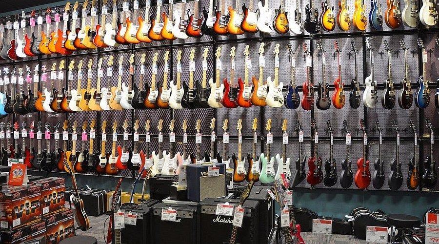
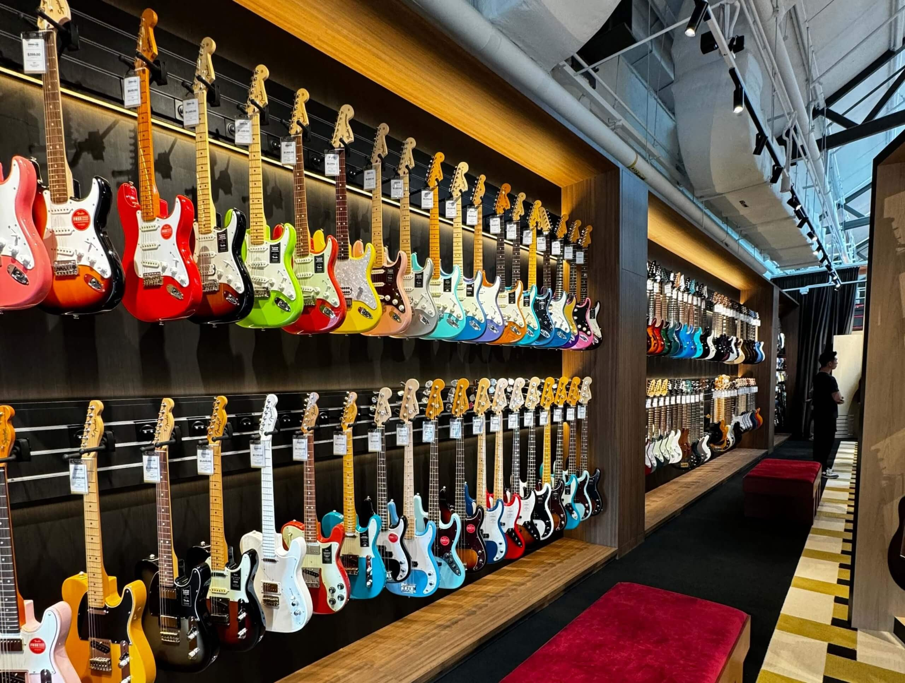

About Us
Welcome to Wang's Guitar Repairs, your trusted destination for professional guitar repairs and maintenance. With a passion for music and years of expertise, we specialize in restoring your beloved instruments to their finest condition. Whether it is a simple restring, intricate fretwork, or electronic troubleshooting, our skilled team ensures every repair is handled with precision and care. We are dedicated to keeping your guitars sounding their best, so you can focus on making great music. Let us help you keep the music alive!
Find Out More!!